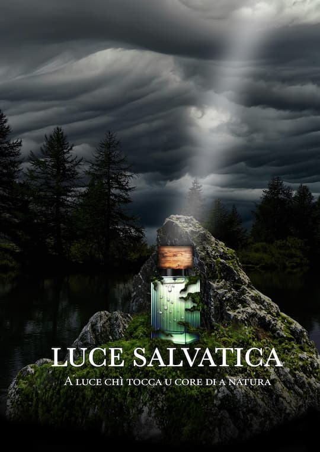

L’objectif de cette affiche est de rendre le parfum unique et de le mettre en valeur en créant un univers visuel immersif et évocateur. L'utilisation de paysages naturels sauvages, combinée à une lumière divine qui met en exergue le flacon, renforce l'idée que ce parfum est plus qu'un simple produit : c'est une véritable expérience sensorielle.Le nom « Luce salvatica » ( « lumière sauvage ») et le slogan « A luce chì tocca u core di a natura » ("La lumière qui touche le cœur de la nature") qui sont en langue corse, renforcent l'identité culturelle et la connexion émotionnelle avec la nature. Le rayon de soleil qui descend vers le parfum y fait référence.
